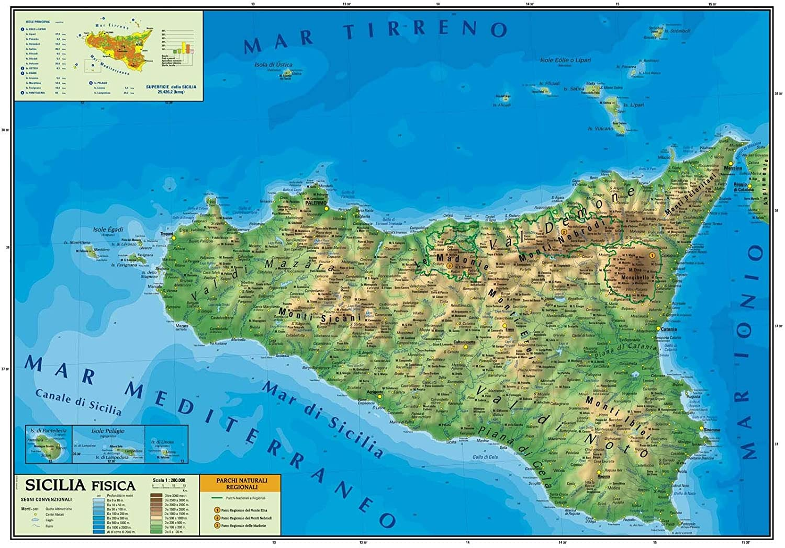
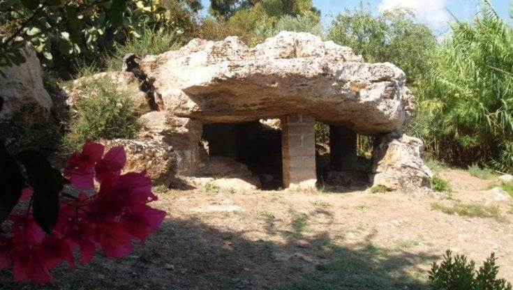
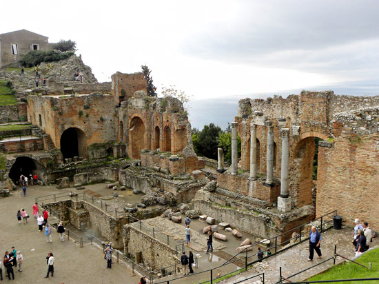
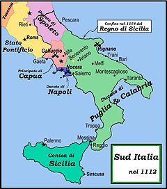
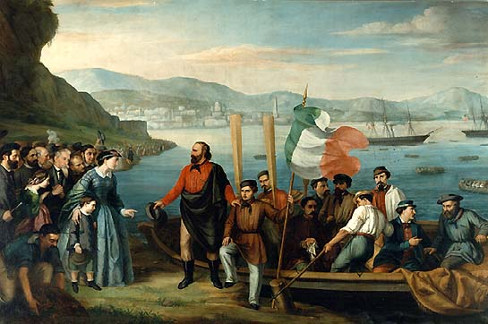
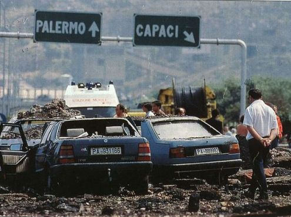
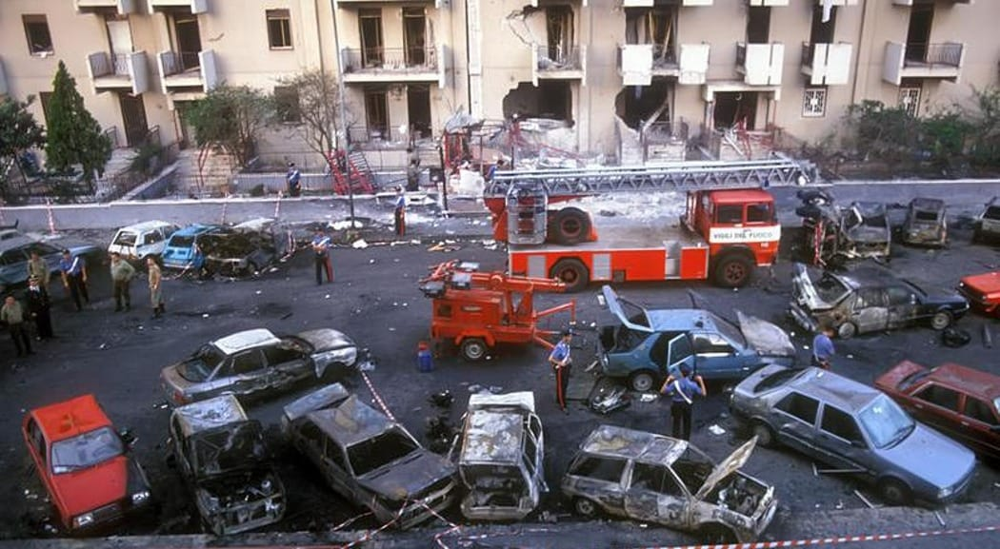
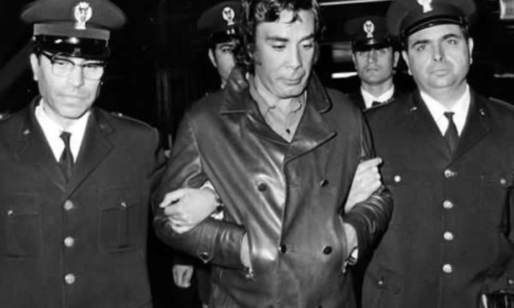
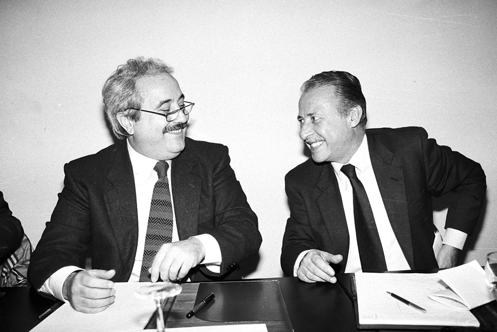

La storia della Sicilia
 La Sicilia è l'isola più grande del Mar Mediterraneo, luogo dove si sono susseguite innumerevoli popolazioni e culture. Questo ha portato ad avere nella suddetta regione italiana uno stratificarsi di popolazioni e periodi storici che la hanno influenzata.
Sicilia fisica.
Preistoria
 Durante il periodo preistorico la Sicilia ebbe un periodo molto florido, dove molte popolazioni si susseguirono, specialmente nell'età del rame e del bronzo. Un esempio di popolazione che mise le proprie colonie in questa regione sono i Fenici, o anche i cartaginesi.
Il 'dolmen', tipica struttura preistorica siciliana.
Il dominio straniero
 Nel periodo tra la preistoria e l'indipendenza delle terre siciliane ci fu un periodo caratterizzato da una successione di popoli che mantennero il potere dell'isola. Questi popoli erano sia autoctoni della penisola italiana come i romani, oppure provenienti da altri continenti. Provenivano dal nord Europa i vandali e gli ostrogoti, mentre i bizantini e gli islamici dall'est Europa e dall'Africa settentrionale.
La città di Taormina, di fondazione romana.
L'indipedenza siciliana
 La Sicilia vide anche un susseguirsi di periodi di indipendenza, come sotto il potere dei sicelioti. Questo per poi formarsi l'Emirato di Sicilia (X-XI secolo) e soprattutto il regno di il Regno di Sicilia che rimarrà indipendente e di grande importanza fino all'unificazione italiana (1860/1861).
La Sicilia indipendente nel 1112
La Sicilia e l'unità d'Italia
 Nel 1860 scoppiò una rivolta, più precisamente il 4 aprile, la quale capeggiata da Francesco Riso riuscì a dimostrare a Giuseppe Garibaldi che la Sicilia fosse pronta per accogliere la sua spedizione. Il 14 maggio 1830 Giuseppe Garibaldi diventò temporaneamente il dittatore della Sicilia in nome di Vittorio Emanuele II. Il 2 giugno 1860 il generale creò un governo con a capo Crispi.
"La Spedizione dei mille" Gerolamo Induno (1825-1890)
La Mafia Siciliana
 Cosa nostra, o più comunemente chiamata mafia siciliana è un'organizzazioe criminale presente sia in Italia che all'estero. Si formò inizialmente durante l'unificazione d'Italia, dopo che i governi dell'epoca concentrarono tutta l'attenzione sul Nord Italia. Questo comportò l'assenza dello stato al sud Italia, e come surrogato nacque questa organizzazione. Nel ventennio fascista ci fù una prima lotta contro di essa. Dopo la seconda guerra mondiale ci fu un periodo dove la mafia potè agire e fare affari quasi indisturbata. Si infiltrò nel settore edilizio dove riceveva grandi tangenti e appalti, nel traffico di droga e nei giri di prostituzione. All'interno della mafia ci furono due guerre interne, la prima nel '62 e la seconda nell''81. Dopo l'omicidio del generale Dalla Chiesa fu aggiunta nel codice penale italiano l'articolo 416-bis che punisce chi si associa con la mafia. Dopo l'uccisione di Rocco Chinnici, giudice anti-mafia fu istituito il pool antimafia composto da Giovanni Falcone, Paolo Borsellino, Giuseppe Di Lello e Leonardo Guarnotta. Ascoltarono le testimonianze dei superpentiti come Tommaso Buscetta, e l'8 novembre 1985 il giudice Falcone depositò una sentenza di 8000 pagine che ha reinviato a giudizio 476 indagati. Cominciò così il maxiprocesso. Dopo questa azione giudiziaria cominciò negli anni '90 una serie di stragi come quella di Capaci (23/5/92) e quella di Via D'Amelio (19/07/92).
Strage di Capaci, dove morì Giovanni Falcone
Strage di Via D'Amelio, dove morì Paolo Borsellino
Il superpentito Tommaso Buscetta
Falcone e Borsellino
Un video dettagliato su colui che ordinò le stragi sopra citate
Torna alla Homepage: